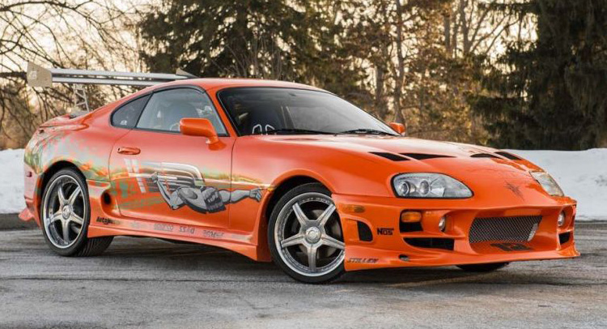
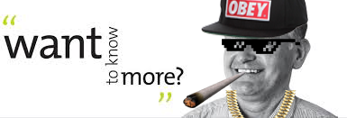

The History of supra
The Toyota Supra is a sports car/grand tourer that was produced by Toyota Motor Corporation from 1978 to 2002. The styling of the Supra was derived from the Toyota Celica, but it was both longer and wider. Starting in mid-1986, the A70 Supra became a separate model from the Celica. In turn, Toyota also stopped using the prefix Celica and began just calling the car Supra. Owing to the similarity and past of the Celica's name, it is frequently mistaken for the Supra, and vice versa. First, second, and third generation Supras were assembled at Tahara plant in Tahara, Aichi while the fourth generation Supra was assembled at the Motomachi plant in Toyota City.
The Supra has appeared in numerous video games, movies, music videos and TV shows. Some of the most notable appearances include the Gran Turismo, Forza Motorsport, Need for Speed, Midnight Club, and Forza Horizon video games and The Fast and the Furious film series.

▲A supra that appearance in the movie "Fast and the Furious" film series.
